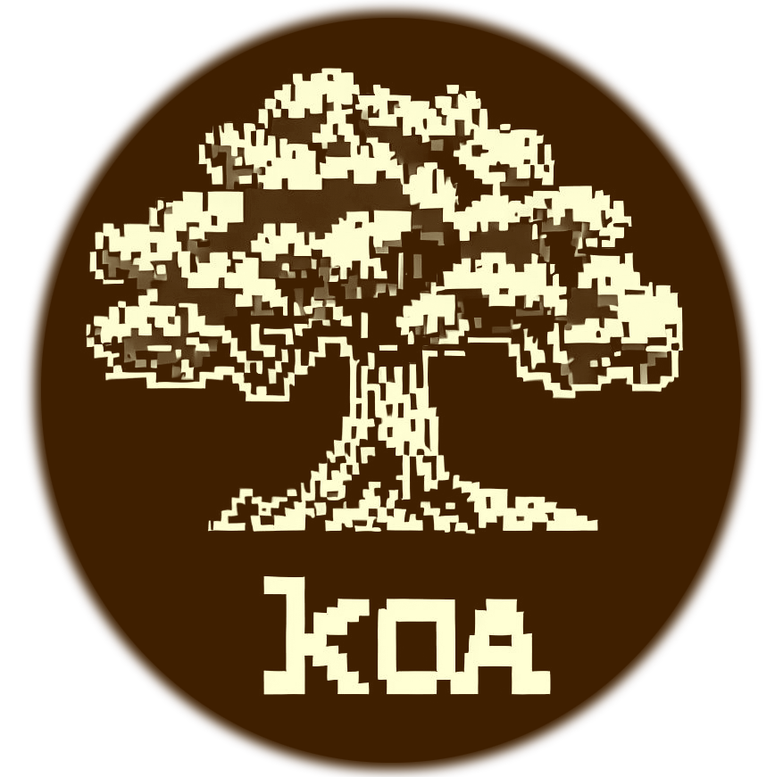

High Performance Computing 101
Course Introduction

The University of Hawaiʻi (UH) high performance computing (HPC) cluster Koa is available for use to active members of any campus in the UH System. This course provides training specific to using Koa which is managed by the Research Cyberinfrastructure (RCI) group in Information Technology Services (ITS).
Course Description
This course is an introduction to using high-performance computing systems, specifically the Koa HPC. This course is intended to provide an introduction and overview of the tools available and how to use them effectively.
Course Learning Outcomes (CLOs)
By the end of this course, you should be able to:
- The layout and design of an HPC cluster like Koa
- Identify the different storage locations available to users and the limitations of each type
- Connecting to Koa using Secure Shell (SSH) and Open OnDemand
- How to submit work to the batch scheduler utilized on Koa
- How to access and utilize pre-installed software on Koa using modules
About ITS Research Cyberinfrastructure
At the University of Hawaiʻi, the Research Cyberinfrastructure team is dedicated to providing comprehensive support for data-intensive research and scholarship across the UH ten campus system. Our mission is to empower researchers and scholars with state-of-the-art advanced computing resources, services, and expertise.
Our Focus
RCI focuses on several key areas to support research and collaboration within the UH community:
-
Advanced Computing: We provide computing resources that go beyond traditional desktop capabilities, enabling researchers to tackle complex computational challenges and perform data-intensive analyses.
-
Data: We offer expertise and services to assist researchers in data storage, management, transfer and networking that ensures privacy and security for valuable research data.
-
Science as a Service: We provide access to advanced scientific capabilities that support the acceleration of research outcomes, foster collaborations, and enable researchers to focus on scientific inquiry.
-
Collaborative Research: We facilitate collaboration by creating opportunities for researchers across disciplines and campuses to share resources, tools, and knowledge, driving innovation and interdisciplinary discovery.(this link opens in a new window/tab)
Contact Info
Email: uh-hpc-help@lists.hawaii.edu
Office: Information Technology Center
Office Hours: by appointment only
Course Navigation
All your learning materials and activities for this course will be accessible in the Content tool located in the top navigational bar across the top on this course site or on the course site's Home page. Please view all content and complete and submit all activities for the appropriate module.
Additional Resources
Course Technology
This course will mention and may utilize a variety of third-party tools or technologies, such as but not limited to:
- A Web browser (Edge, Chrome, Firefox, etc.)
- Open OnDemand
- Globus
- FileZilla
- Command-line text editor (nano, Emacs, Vim, NeoVim) and other tools (scp, rclone, rsync, modules)
Getting Help
If you have any questions regarding:
- This course, please contact Research Cyberinfrastructure.
Next Steps
Now that you have read through the Getting Started module, we are now ready to begin the course and move on to the first module.
Tips
Here are some tips for you on how to be successful in this course:
- Follow instructions and try the examples in the lessons
- Reach out to us if you have questions or run into difficulty completing a module